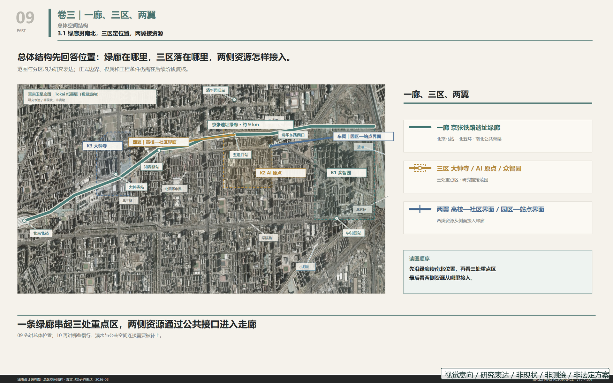
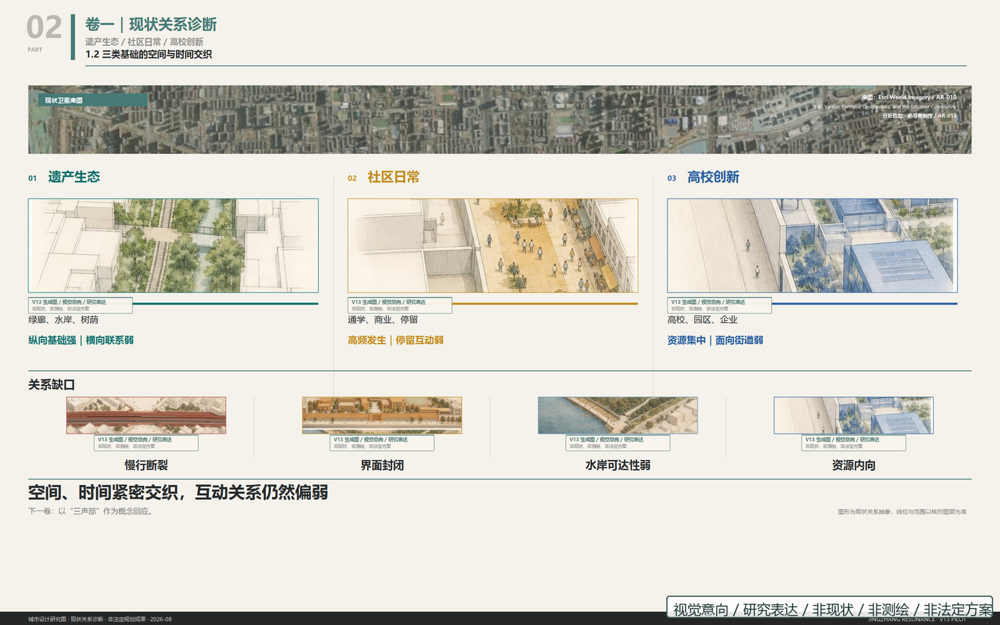
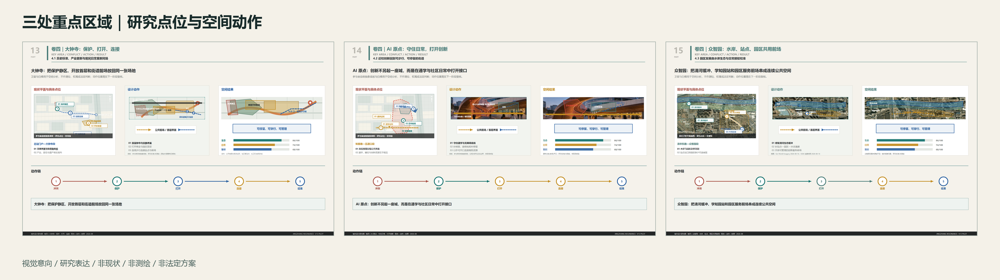
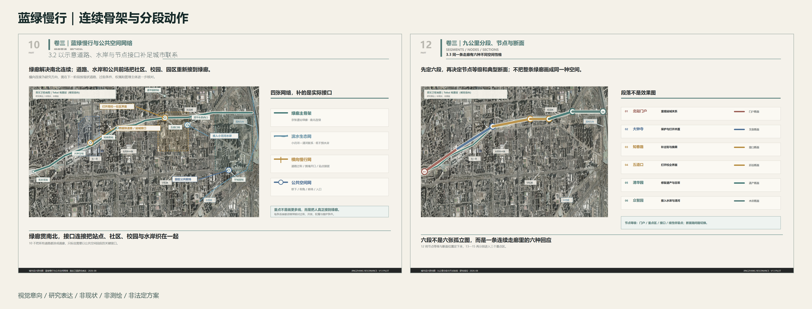
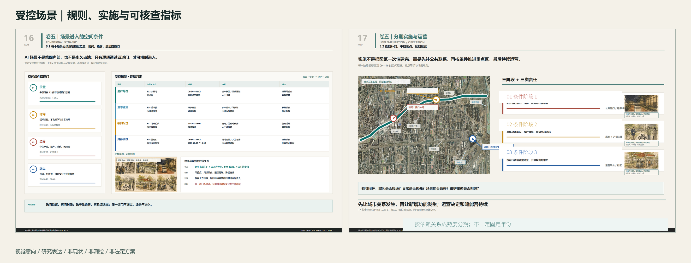

参与者修复证据，不是评审结论
本区只登记参与者自检、证据路径和边界，不生成维护者评分、结论、准入或发布授权。
compliance_matrix.json · design_depth_matrix.jsonvisual/index.html · visual/index.en.html · visual/assets/ai-review-layer.jsoncompliance_matrix.json · design_depth_matrix.json · visual/assets/ai-review-layer.jsonvisual/assets/bilingual-equivalence.json · visual/assets/final-render-qa.json · design_depth_matrix.json · visual/assets/ai-review-layer.jsonvisual/index.html · compliance_matrix.json · visual/assets/ai-review-layer.jsonvisual/assets/asset-rights-ledger.json · visual/assets/asset-clearance-disposition.json · visual/assets/brand-model-provenance.jsonvisual/assets/bilingual-equivalence.json · visual/assets/pdf-font-audit.json · visual/assets/final-render-qa.jsonvisual/assets/ai-review-layer.json · visual/assets/bilingual-equivalence.json · visual/assets/asset-rights-ledger.json · visual/assets/final-gates.json · visual/assets/final-render-qa.json人类叙事已冻结。 参与者可控的 13 项修复均已完成，等待后续复核。AR-010 的 N01 页 13 瓦片已由参与者自制抽象底板替换；保留的 Esri World Imagery /export 派生图按 Esri Master License Agreement、官方静态出版说明及引用指引登记；包内只发布带注记的非商业静态派生图，不发布原始瓦片或离线底图包。署名：Sources: Esri, Vantor, Earthstar Geographics, and the GIS User Community。AR-013 已闭合为 34 条记录 / 22 个唯一块（32/20 Tokai + 2/2 Oskyi）；Tokai provider response ID 与服务条款归档不存在，字段保持 null，并由本地运行证据与参与者限定发布范围支撑。当前候选尚待维护者复评。完整证据见 assets/ai-review-layer.json、asset-rights-ledger.json、asset-clearance-disposition.json 与 brand-model-provenance.json。
正式地理依据以 GeoJSON、metrics、sources、assumptions 和矩阵为准。当前边界为 provisional constraint；生成图和研究点位图不承担现状、尺度、边界、测绘或审批证明。
三声部
遗址、工程史与公共记忆。
步行、停留、服务与可解释技术。
开源、测试、转化与可信治理。
总览地图与三层范围
统筹研究范围、总体设计范围和重点区域范围通过同一证据链组织。总览地图同时索引用地分区、交通慢行、蓝绿公共空间、建筑、更新项目与 AI 场景；它是研究总览，不是法定规划图。
五张核心图





AI 场景（14 张卡）
- T-01绿廊夜间机器人配送走廊
- T-02小月河低空无人机廊道
- T-03地下停车场物流中转节点
- T-04具身智能校园测试环路
- T-05小月河零干预生态监测
- T-06铁路遗址 AI 文化导览
- T-08人机交接廊
- T-09步行节奏多样性评估
- T-10公共安全分级响应复核
- T-11三声部强弱仪表盘
- T-13老年守望网络
- T-19公共算力接入站
- T-20AI 朝圣地标（三处）
- T-21五道口菜市场 AI 助手
核心指标
provisional site geometry
research green ratio
research public-space ratio
任务覆盖与自检状态
任务覆盖由 compliance_matrix.json、standard_matrix.json 和 design_depth_matrix.json 追踪；自检状态以 self_check.json 及官方校验输出为准。通过机器校验不代表规划、工程或权属批准。
来源与假设
来源见 sources.json；假设见 assumptions.json。官方红线、重点区 polygon、测绘、权属、控规、道路水岸和工程条件仍待补齐。
提交状态
结构化 formal 包、21 页 A3 文册（含 18 页 V13 分析图）、3 张 A0 展板、节点全量附件及审计清单已归入同一目录。GitHub 身份、最终贡献者、官方红线与重点区 polygon 仍需在发布前补齐。